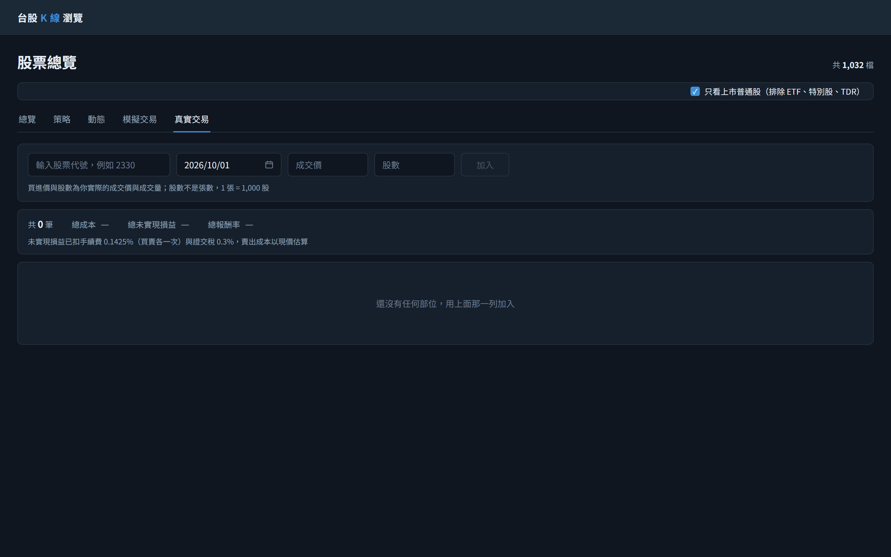
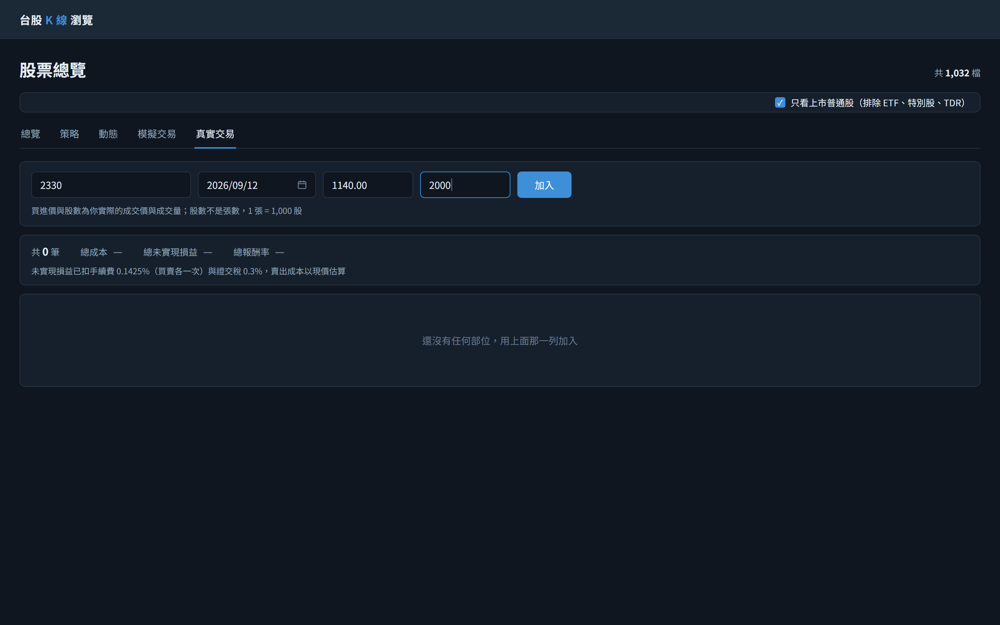
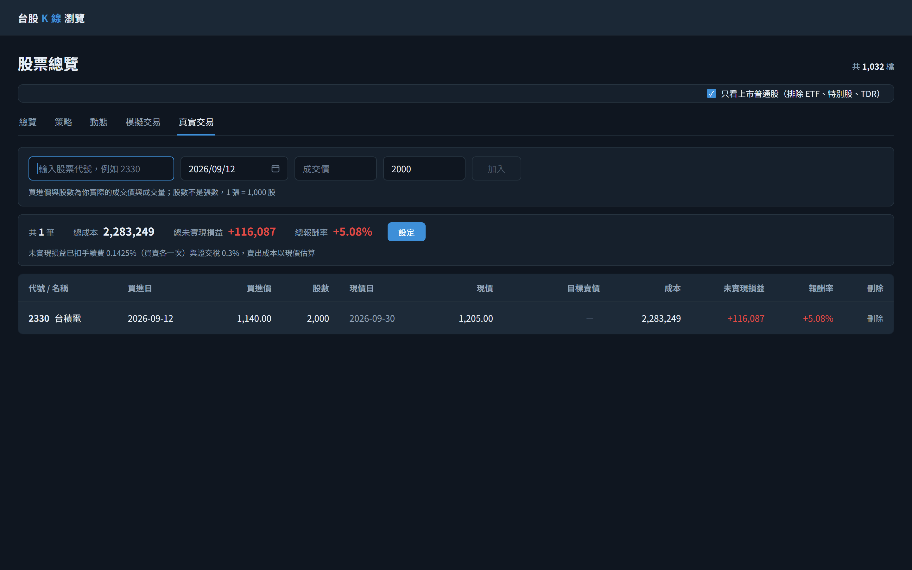
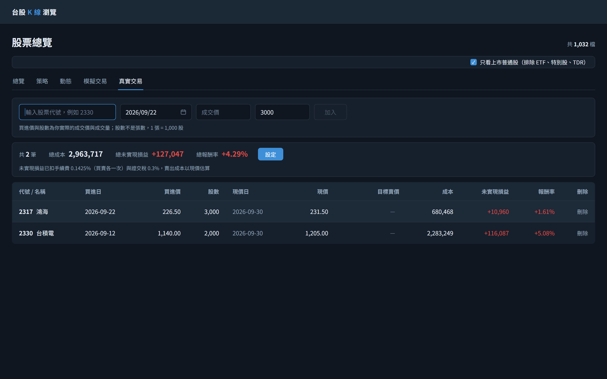
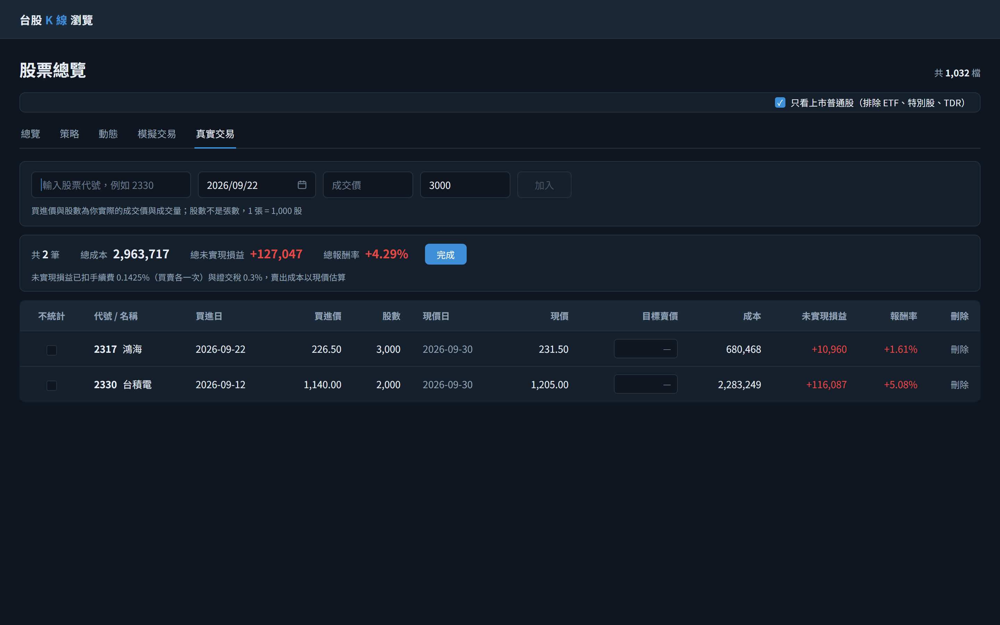
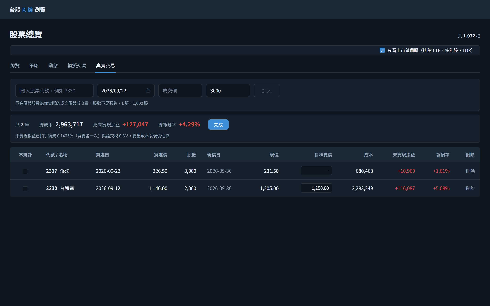
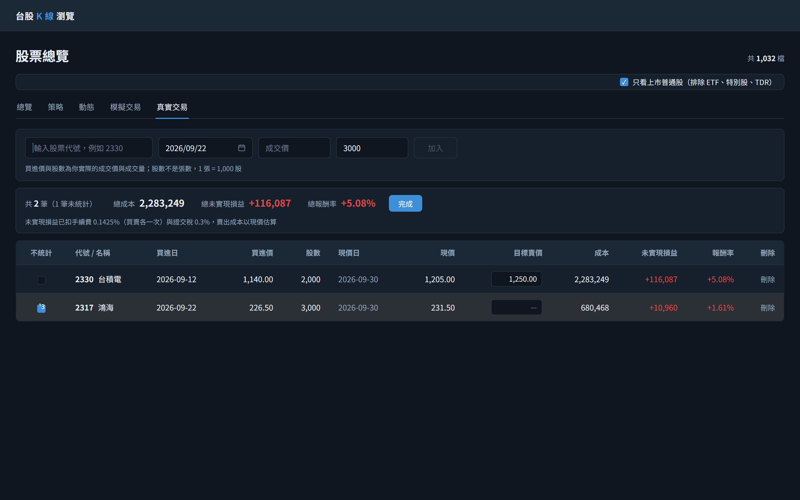
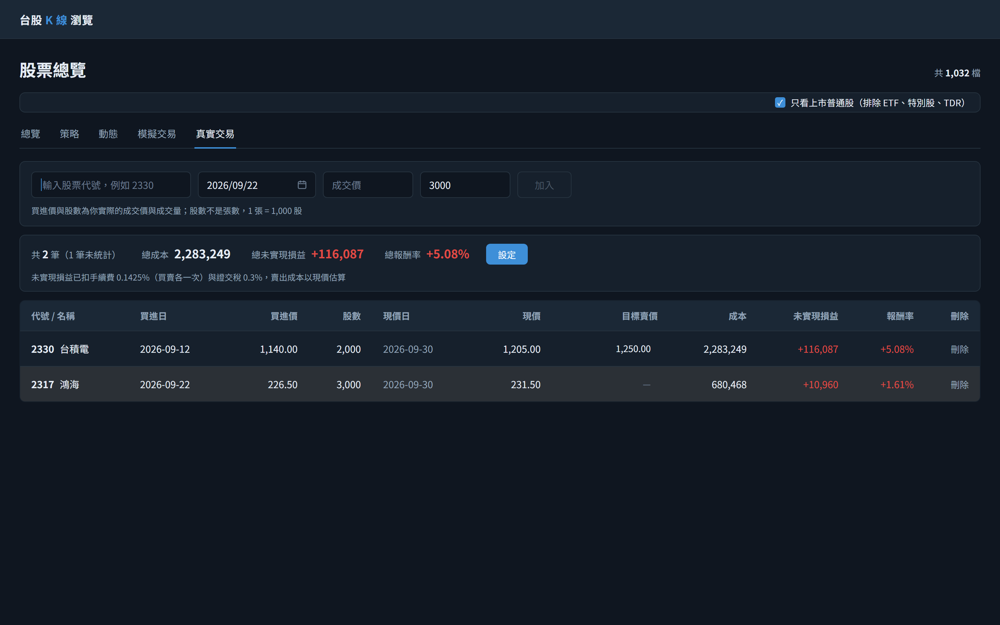
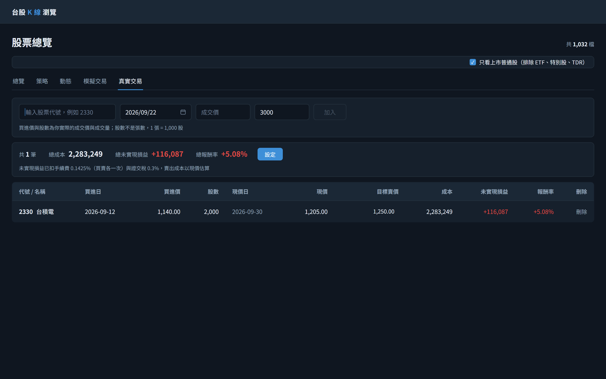

1初始畫面：切到第五個頁籤「真實交易」（網址 /stocks?tab=real）。進頁即取一次列表，目前沒有任何部位，所以表格不顯示，改以弱化色說明「還沒有任何部位，用上面那一列加入」，摘要列的三個總計顯示「—」而不是 0／0%。加入列由左至右是代號、買進日、買進價、量四格輸入加「加入」按鈕。買進日已預填今日 2026-10-01——值取自同一份回應的 asOfDate，不以瀏覽器時鐘推算，而那也正好是它的可選上限；代號、買進價、量三格仍空白，「加入」因此 disabled。這個預設只在第一次取列表成功時設定一次，之後任何重新取得都不覆寫使用者當下的值。與模擬交易不同的是買進價與股數由使用者自己填（他實際的成交價與成交量），說明文字特別講明股數不是張數。本頁資料由後端讀寫，畫面一律只透過 API 存取。
GET/api/real-trades進入分頁（含由其他分頁切回、重新整理）即取一次；此時 items 與 skippedLines 為空陣列、兩個總額為 0、totalReturnPercent 為 null，畫面因此顯示三個「—」，同一份回應的 feeRatePercent／taxRatePercent 組成下方費率說明那一行，asOfDate 則同時是買進日的預設值與不能超過的上限
GET/api/stocks?page=1&size=1/stocks 頁面層級常駐的「共 N 檔」，由頁面本身發出，與本分頁的持股無關

2三格填完、買進日改掉：代號 2330、買進日由預設的今日改成實際成交日 2026/09/12、買進價 1140.00、量 2000（2,000 股 = 2 張，所以填的是 2000 而不是 2）。四格都有值，「加入」隨即由 disabled 轉為可按；任一格仍為空時它會維持 disabled，在任一格按 Enter 與按「加入」等效。前後空白自動去除，買進價大於 0 且最多兩位小數、股數須為大於 0 的整數、買進日不得晚於今日，這些前端先擋下，不合格時不送出請求。此步驟純前端，不發任何請求。

3按「加入」：前端送出四欄全帶的 body，後端寫入一筆並回 201，隨後畫面重新取得整份列表。成功後只清空代號與買進價，買進日 2026/09/12 與量 2000 維持不變（不會被重設回今日的預設值）——連續輸入同一天、同樣股數的幾筆是常見情形，「加入」因此又回到 disabled。新的一筆以列閃爍一次（#1D2A38）提示。表格與摘要列同時出現：成本 2,283,249 已含買進手續費 3,249，未實現損益 +116,087 已扣以現價估的賣出手續費 3,434 與證交稅 7,230；現價日 2026-09-30 早於今日 2026-10-01，所以該格用次要文字色。三個總計與每一筆的金額都直接取回應，前端不自行加總。表格預設是**非設定模式**：11 欄、沒有「不統計」欄，現價右邊的「目標賣價」是純文字（未設定顯示「—」）、不可編輯；摘要列總報酬率右邊出現「設定」按鈕（清單為空時不出現）。不統計與目標賣價都不出現在加入列，POST 的 body 仍是四欄，新筆一律未勾選、無目標賣價。
POST/api/real-tradesbody { stockId: "2330", buyDate: "2026-09-12", buyPrice: 1140, shares: 2000 }，四欄全帶且都由呼叫端指定；後端把這一筆寫進資料檔（本頁不知道檔案在哪），回 201 與剛建立的那一筆
GET/api/real-trades加入成功後重新取得列表，讓排序、三個總計與各筆 id 一律由後端決定，不就地改動畫面上的陣列

4在輸入列填入第二筆（代號 2317、買進日改為 2026/09/22、買進價 226.50、量 3000）後按 Enter（等同按「加入」）：第二筆建立完成並重新取得列表。列依後端回的順序呈現（買進日由新到舊），2317 因此排在 2330 上面；前端只會把「不統計」的列移到最後，此外不重排也不提供排序，列本體不可點。漲跌色以實際渲染色為準：兩筆的未實現損益與報酬率都是 #E04B45，成本、買進價、股數與現價恆為 #E6EDF5。三個總計更新為 2,963,717／+127,047／+4.29%——總報酬率是成本加權，不是兩筆報酬率的算術平均。每列最右的「刪除」按下即送出 DELETE、不跳確認框。兩筆都未被排除（沒有灰底列）、「目標賣價」都未設定（純文字「—」），所以三個總計涵蓋兩筆，摘要列只顯示「共 2 筆」而沒有「未統計」那一段。
POST/api/real-tradesbody { stockId: "2317", buyDate: "2026-09-22", buyPrice: 226.5, shares: 3000 }；按 Enter 與按「加入」送出同一支端點。同檔同日可以有多筆，不做唯一性檢查
GET/api/real-trades加入成功後重新取得列表，兩筆與三個總計都由這次回應決定；新寫入的 2317 是檔案中的第 2 筆資料行（id 2），但依買進日由新到舊排在畫面第一列

5按摘要列總報酬率右邊的「設定」：進入**設定模式**，按鈕文字變成「完成」，表格最左邊多出「不統計」checkbox 欄（12 欄），「目標賣價」變成輸入框（未設定時為空、placeholder「—」）。設定模式是純前端狀態：切換不送任何請求，也不保存——重新整理後回到非設定模式。

6在台積電那一列的「目標賣價」輸入框填入 1,250.00 後按 Enter（或直接移開焦點）：立即送出，後端寫進資料檔，所以重新整理後還在；重新取得列表後仍停在設定模式。「目標賣價」緊鄰現價右邊，因為它唯一的用途就是跟現價對照看。它**只是一個記錄**：三個總計與上一步逐位相同（2,963,717／+127,047／+4.29%），該列的成本、未實現損益、報酬率與列的順序也全部不變——不算目標損益、不算目標報酬率，現價 1,205.00 低於目標價也不做任何提示或變色。值沒改就不送；按 Esc 回復原值且不送出；不合格的值由前端先擋下並在該列下方顯示錯誤。
PATCH/api/real-trades/1body { targetSellPrice: 1250 }，**只帶被改動的那一欄**（不帶 excluded）；台積電是資料檔第 1 筆資料行。留空送出時帶 targetSellPrice: null 表示清掉
GET/api/real-tradesPATCH 成功後重新取得列表；id 是資料行序號，所以每一次改動成功都重新取一次，不就地改動畫面上的陣列

7勾選鴻海那一列最左邊的「不統計」：點一下即送出。勾起來＝不算：三個總計改成只算台積電——總成本由 2,963,717 降為 2,283,249、總未實現損益由 +127,047 降為 +116,087、總報酬率由 +4.29% 改為 +5.08%，摘要列顯示「共 2 筆（1 筆未統計）」。依新回應，鴻海那一列**移到表格最後並整列灰底（#2B3036）**，文字顏色不變；它**仍留在表格裡，自己的 680,468／+10,960／+1.61% 照常顯示**——排除是可逆的統計設定，不是刪除。統計組與不統計組內部各自保持後端回應的順序。
PATCH/api/real-trades/2body { excluded: true }，只帶這一欄（不帶 targetSellPrice）；鴻海是資料檔第 2 筆資料行
GET/api/real-trades成功後重新取得列表；**三個總計一律由後端重算**，畫面不自己扣掉被排除的筆；排序只在前端把 excluded 的列移到最後，後端回應的順序不變

8按「完成」回到非設定模式：按鈕文字變回「設定」，「不統計」欄消失（11 欄），目標賣價回到純文字——台積電顯示 1,250.00。沒有 checkbox 欄也看得出哪一筆沒算進總計：鴻海那一列仍灰底、排在最後。切換模式不送任何請求。

9按鴻海那一列（灰底、排在最後）的「刪除」：不彈確認對話框，直接送出 DELETE，id 取自該列（2，資料行序號，不是畫面上的第幾列）；成功後重新取得列表。三個總計與上一步**完全相同**（2,283,249／+116,087／+5.08%）——鴻海那一筆已被排除、本來就沒算進總數；摘要列由「共 2 筆（1 筆未統計）」改為「共 1 筆」，灰底列隨之消失。
DELETE/api/real-trades/2刪除鴻海那一列；id 是該列在資料檔中的資料行序號，成功回 204 無內容。若 id 已超出當下行數，會回 404 REAL_TRADE_NOT_FOUND，畫面顯示「這一筆已經不存在了」並重新取得列表
GET/api/real-trades刪除成功後重新取得列表；排在它後面的資料行 id 會依新回應往前移，所以一律重新取得、不就地改動陣列